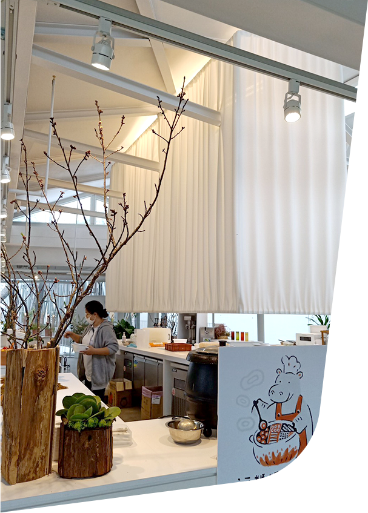
享受親子好食光
森林食堂
座落在1號出入口旁的「森林食堂」，是新竹動物園內的親子餐廳，這棟全新的純白色建築，營造出宛如美術館般的簡約與優雅。
餐廳內通透的落地玻璃帷幕，讓中庭大樹及週邊街景映入眼簾，享受綠樹與光影相映成趣的視覺印象，這裡還有最吸引人的特色是在享用輕食的同時，
還能眺望窗外的伊蘭羚羊、鴕鳥和羊駝，讓動物朋友們陪你一起用餐喔。
開放時間：週二至週日 10:00-18:00
電話：(03) 561-9350
 園內景點
園內景點

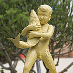
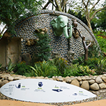
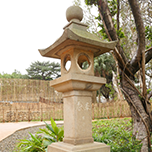
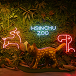
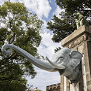
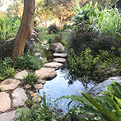
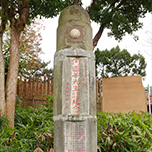
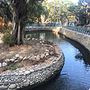
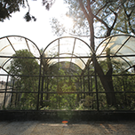
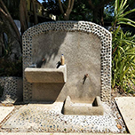
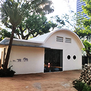